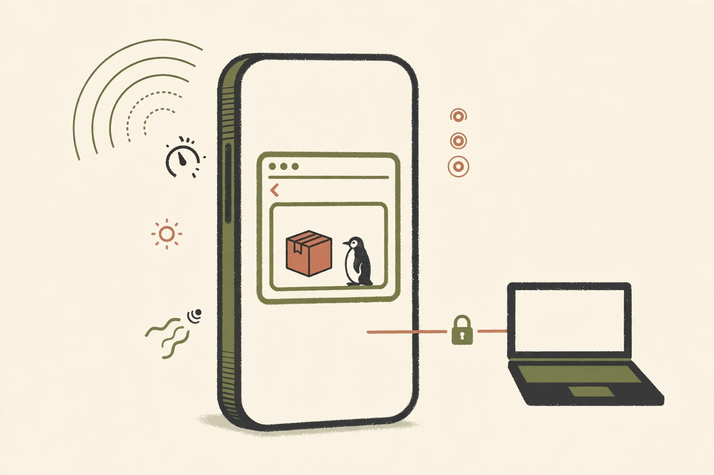
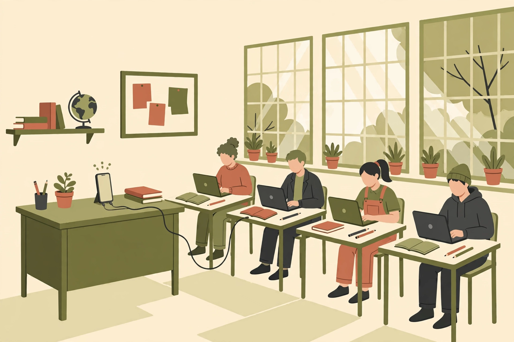
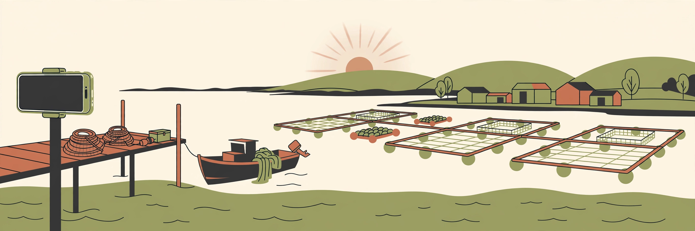
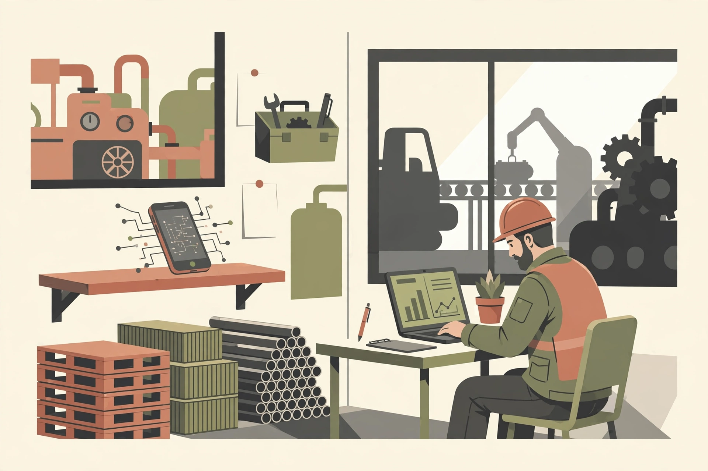
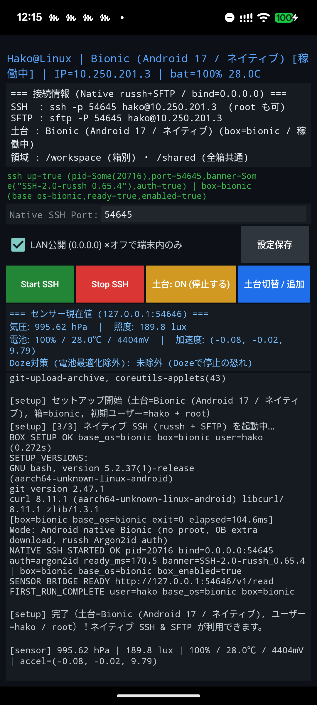

引き出しの中の古いスマホが、
サーバーになります。Hako@Linux ― 電話の中に立つ Linux の箱
アプリを入れるだけで、Android の電話が小さな Linux サーバーに変わります。専用の機械を買わなくても、手元の電話がそのまま使えます。


何がすごいのか
サーバーというと、大きな機械と契約の話になりがちです。これは違います。
電話1台で、全部入り
普通のサーバーには別々に要る物――電池、時計、気圧や明るさを測るセンサー、通信の仕組み――が、電話には最初から全部入っています。停電しても、電池で動き続けます。
ネットが無くても動く
外のサービスに頼らないので、教室の中だけ、建物の中だけでも動きます。ネットの無い所や、ネットに出したくない物を置く場所に使えます。
電気をほとんど食わない
画面を消して置きっぱなしにする実験では、電池の減りは1時間で 2% でした。計算では、満充電で約 50 時間、測り続けることができます（実験段階の測定）。
古い電話がよみがえる
2019年発売の Pixel 3a でも動いています。アプリ本体は 15.80 MiB と小さいので、眠っている電話の使い道になります。
使い方の場面
例えば、こんな所で使えます。

学校の授業で
プログラミングの授業で使う「ソースコードの置き場」を、電話1台で用意できます。生徒のアカウント登録は不要で、ネットが無くても授業が進みます。

農業の現場で
畑やハウスのそばに置いて、気圧や明るさなどを置きっぱなしで記録します。電池で長く持つので、コンセントの無い場所にも置けます。記録は後からパソコンで取り出せます。

水産業の現場で
漁港や養殖場のような、ネットが弱い場所の記録係に。電話1台でその場の状態を記録して貯めておき、戻ってからまとめて送れます。

工業・建設の現場で
ネットに出せない記録の置き場に。閉じたネットワークの中で、現場のデータを手元に貯めておけます。
数字で見る
実機で測った数字です。
画面
電話側の画面は、状態の確認とボタンだけです。操作はパソコンから行います。



仕組み（技術者向け）
仮想マシンは使いません。電話のカーネルを共用し、土台（Ubuntu 24.04／Alpine 3.24／Bionicのみ）は proot の中で動かします。速さが要る物は Bionic ネイティブ側に、互換性が要る物は土台の中に置くのが、実測から決めた振り分けです。
入り口は自作の SSH サーバーです。Rust のライブラリ russh で作り、起動 14.0 ms、待ち受け 2.43 MiB。土台が止まっていても Bionic 側のシェルで応答します。サービス（Forgejo、code-server、nginx）は同梱せず、hako up でレシピから足します。本体は公式の配布元から取り、ハッシュで照合します。
詳しくは 技術記事「電話の中に立つ Linux の箱」 に、実測と一緒に書いてあります。